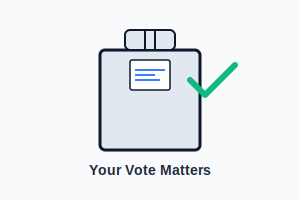

Voting is not just a right—it's a responsibility that shapes our collective future. When citizens vote, they directly influence policies that affect every aspect of their daily lives.
Every election, millions of eligible voters choose not to participate. This decision may seem inconsequential on an individual level, but collectively, non-voters can significantly alter election outcomes.
The Impact of Your Vote
Your vote contributes to decisions about:
- Education funding and policies
- Healthcare access and affordability
- Environmental protections
- Infrastructure development
- Economic policies and tax decisions
- Civil rights and equality measures
Local elections often have the most direct impact on your community, yet they typically have the lowest turnout. School board members, city council representatives, and county officials make decisions that affect your neighborhood, schools, and local services.
"Democracy cannot succeed unless those who express their choice are prepared to choose wisely. The real safeguard of democracy, therefore, is education." — Franklin D. Roosevelt
Historical Perspective
Throughout history, countless individuals have fought—and sometimes died—for the right to vote. The expansion of voting rights to include women, racial minorities, and young adults was hard-won through persistent activism and sacrifice.
When we choose not to vote, we diminish the power of these historic victories and weaken the democratic principles upon which many nations are founded.